ക്ലാസ്
4 പൂക്കാം കായ്ക്കാം എല്ലാ പൂക്കളിൽ നിന്നും ഇതുപോോലെ കായ്കൾ ഉണ്ടാകുമോോ ടീച്ചർ?
ചിത്രം 3.1
കുട്ടികളുടെ സംശയം ശ്രദ്ധിച്ചില്ലേ. നിങ്ങളുടെ അഭിപ്രായം എന്താണ്? ശാസ്ത്രപുസ്തക ത്തിൽ എഴുതൂ. 59
VI
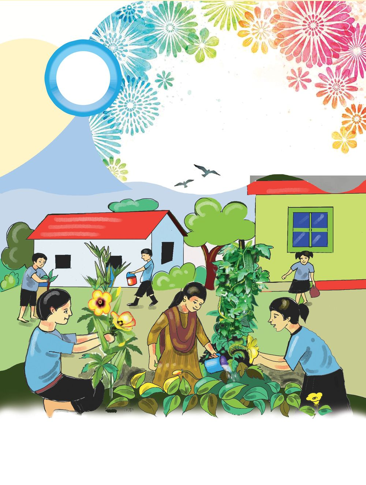
ക്ലാസ്
4 പൂക്കാം കായ്ക്കാം എല്ലാ പൂക്കളിൽ നിന്നും ഇതുപോോലെ കായ്കൾ ഉണ്ടാകുമോോ ടീച്ചർ?
ചിത്രം 3.1
കുട്ടികളുടെ സംശയം ശ്രദ്ധിച്ചില്ലേ. നിങ്ങളുടെ അഭിപ്രായം എന്താണ്? ശാസ്ത്രപുസ്തക ത്തിൽ എഴുതൂ. 59
VI

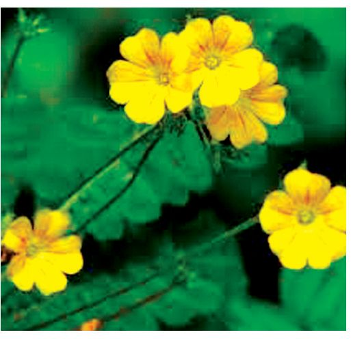


അടിസ്ഥാനശാസ്ത്രം
നിങ്ങളുടെ ചുറ്റുപാടുംം കാണുന്ന ചില പൂക്കളാണ് താഴെ ചിത്രത്തിൽ നൽകിയിരിക്കുന്നത്. ഇതിൽ ഏതെല്ലാം പൂക്കൾ നിങ്ങൾക്ക് തിരിച്ചറിയാൻ കഴിയുന്നുണ്ട്? കൂട്ടുകാരുമായി ചേർന്ന് ചിത്രത്തിലെ പൂക്കൾ തിരിച്ചറിഞ്ഞെഴുതൂ.
u
മുക്കുറ്റി
u u u
എല്ലാ പൂക്കളുംം ഒരു പോോലെയല്ല എന്ന് നിങ്ങൾക്കറിയാമല്ലോോ. എന്തൊൊക്കെ കാര്യയങ്ങളി ലാണ് അവ വ്യയത്യാസപ്പെട്ടിരിക്കുന്നത്? ചുറ്റുപാടുമുള്ള പൂക്കൾ നിരീക്ഷിക്കൂ. അവയുടെ വൈവിധ്യം തിരിച്ചറിഞ്ഞ് പട്ടിക പൂർത്തിയാക്കൂ. പേര്
നിറം
മണം
ഒറ്റപ്പൂവ് / പൂങ്കുല
ഇതളുകളുടെ എണ്ണം
റോോസപ്പൂവ്
ചുവപ്പ്
ഉണ്ട്
ഒറ്റപ്പൂവ്
ധാരാളം ഇതളുകൾ
നിങ്ങൾ നിരീക്ഷിച്ച വിവിധ പൂക്കളുടെ നിറം, മണം, ഇതളുകളുടെ എണ്ണം എന്നിവ വ്യയത്യയസ്തമാണെന്ന് മനസ്സിലാക്കിയല്ലോോ. പൂക്കൾക്ക് ഇതളുകൾ മാത്രമാണോോ ഉള്ളത്? മറ്റുഭാഗങ്ങളുമില്ലേ? അവ നിരീക്ഷിക്കൂ. നിരീക്ഷിച്ച എല്ലാ പൂക്കളിലും ഭാഗങ്ങൾ ഒരുപോോലെയാണോോ?
പൂക്കളുടെ ഭാഗങ്ങൾ പൂക്കളുടെ ഭാഗങ്ങളെക്കുറിച്ച് കൂടുതൽ കാര്യയങ്ങൾ പഠിക്കാം. അതിനായി ഒരു ചെമ്പര ത്തിപ്പൂവ് നിരീക്ഷിക്കൂ. ഏതൊൊക്കെ ഭാഗങ്ങൾ നിങ്ങൾക്ക് തിരിച്ചറിഞ്ഞ് പറയാൻ കഴിയു ന്നുണ്ട്? അറിയാവുന്ന ഭാഗങ്ങൾ ചുവടെ നൽകിയിരിക്കുന്ന ചിത്രത്തിൽ രേഖപ്പെടുത്തൂ. 60

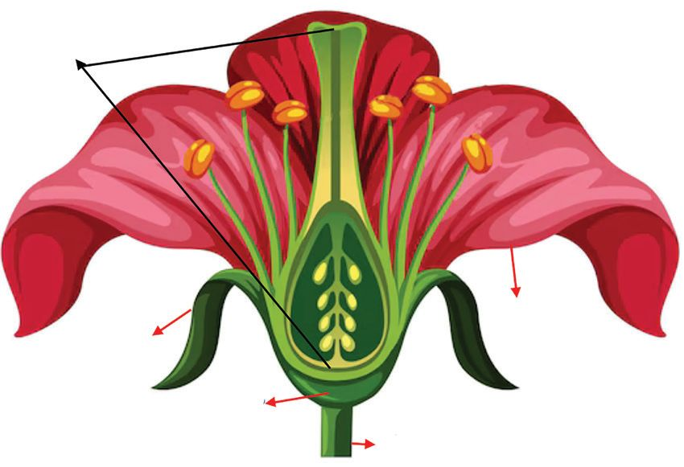
ക്ലാസ്
VI
..................................
വിദളം .................................. ചെമ്പരത്തിപ്പൂവ്
ഒരു പൂവിൻ്റെ പ്രധാനഭാഗങ്ങളാണ് താഴെ പട്ടികയിൽ നൽകിയിരിക്കുന്നത്. പട്ടിക വിശ കലനം ചെയ്ത് പൂവിന്റെ പ്രധാന ഭാഗങ്ങളുംം അവയുടെ ധർമ്മവും സംബന്ധിച്ച് കുറിപ്പ് തയ്യാറാക്കി ക്ലാസിൽ അവതരിപ്പിക്കൂ. ഭാഗങ്ങൾ
ധർമ്മങ്ങൾ
പൂഞെട്ട്
പൂവിനെ തണ്ടുമായി ബന്ധിപ്പി (Pedicel) ക്കുന്നു പുഷ്പാസനം പൂവിന്റെ മറ്റ് ഭാഗങ്ങൾക്ക് കേസരപുടം ജനിപുടം (Thalamus) ഇരിപ്പിടം ഒരുക്കുന്നു വിദളപുടം വിദളങ്ങൾ ചേർന്ന് രൂപപ്പെട്ടത്. (Calyx) പൂമൊൊട്ടിനെ പൊൊതിഞ്ഞ് സംര ക്ഷിക്കുന്നു ദളപുടം ദളങ്ങൾ ചേർന്ന് രൂപപ്പെട്ടത്. ദളപുടം (Corolla) പൂവിന് ഭംഗിയും ആകർഷണ വിദളപുടം വും നൽകുന്നു പുഷ്പാസനം പൂഞെട്ട് കേസരപുടം കേസരങ്ങൾ ചേർന്ന് രൂപപ്പെട്ടത്. (Androecium) പൂവിന്റെ ആൺ പ്രത്യുൽപാദന ഭാഗം ജനിപുടം പൂവിന്റെ പെൺ പ്രത്യുൽപാദ (Gynoecium) നഭാഗം. ജനിപുടത്തിൽ ഒന്നോോ ഒന്നിലധികമോോ ജനികളുണ്ടാകും പൂവിൻ്റെ എല്ലാ ഭാഗങ്ങൾക്കും വ്യയത്യയസ്ത ധർമ്മങ്ങളാണുള്ളതെന്ന് പട്ടിക വിശകലനം ചെയ്തപ്പോോൾ മനസ്സിലായല്ലോോ. പട്ടിക ചാർട്ട്പേപ്പറിൽ പകർത്തി ക്ലാസിൽ പ്രദർശിപ്പിക്കൂ.
നിരീക്ഷിക്കാം പഠിക്കാം പൂവിന്റെ ഓരോോ ഭാഗവും സൂക്ഷ്മമായി നിരീക്ഷിച്ചാലോോ. എന്തെല്ലാം സാമഗ്രികൾ വേണം? 61
അടിസ്ഥാനശാസ്ത്രം
ആവശ്യയമായ സാമഗ്രികൾ : വ്യയത്യയസ്തമായ പൂക്കൾ, ഹാൻഡ് ലെൻസ്, ഫോോഴ്സപ്സ്, വെള്ളപേപ്പർ. ഓരോോ പൂവും ഹാൻഡ്ലെൻസ് ഉപയോോഗിച്ച് നിരീക്ഷിക്കൂ. പട്ടികയിലൂടെ തിരിച്ചറിഞ്ഞ എല്ലാ ഭാഗങ്ങളുംം നിങ്ങൾ നിരീക്ഷിച്ച പൂവിൽ കാണാൻ കഴിയുന്നുണ്ടോോ? നിങ്ങൾ നി രീക്ഷിച്ച ഒരു പൂവിൻ്റെ ഭാഗങ്ങൾ സൂക്ഷ്മമായി വേർതിരിച്ച് ഒരു വെള്ളപ്പേപ്പറിൽ വച്ച് പ്രദർശിപ്പിക്കൂ. ടീച്ചറുടെ സഹായത്തോോടെ ജനിപുടം നെടുകെ മുറിച്ച് ഭാഗങ്ങൾ ഹാൻഡ് ലെൻസ് ഉപ യോോഗിച്ച് നിരീക്ഷിക്കൂ. നിങ്ങൾ പ്രദർശിപ്പിച്ച പൂവിൽ വിദളപുടം, ദളപുടം, കേസരപു ടം, ജനിപുടം എന്നീ നാലു ഭാഗങ്ങൾ കാണുന്നുണ്ടോോ? കണ്ടെത്തലുകൾ ശാസ്ത്രപുസ്തക ത്തിൽ രേഖപ്പെടുത്തൂ.
പൂർണ്ണപുഷ്പം (Complete Flower) വിദളപുടം, ദളപുടം, കേസരപുടം, ജനിപുടം എന്നീ നാല് ഭാഗങ്ങളാണ് ഒരു പൂവിൽ പ്രധാനമായും കാണുന്നത്. ഈ നാലു ഭാഗങ്ങളുമുള്ള പൂവിനെ പൂർണ്ണ പുഷ്പം എന്ന് പറയുന്നു.
പ്രരോജക്ട് ചെയ്യാം എല്ലാ പുഷ്പങ്ങളുംം പൂർണ്ണപുഷ്പങ്ങളാണോോ? വീട്ടിലെയും സ്കൂളിലെയും വിവിധയിനം പൂക്കൾ നിരീക്ഷിക്കൂ. താഴെക്കൊൊടുത്തിട്ടുള്ള പട്ടികയിൽ നിരീക്ഷണങ്ങൾ രേഖപ്പെടുത്തൂ. പൂവ്
പൂഞെട്ട്
പുഷ്പാസനം
വിദളം
ദളം
കേസരപുടം
ജനിപുടം
പട്ടിക വിശകനം ചെയ്യൂ. എന്തൊൊക്കെയാണ് നിങ്ങളുടെ നിഗമനങ്ങൾ? റിപ്പോോർട്ട് തയാറാക്കി ക്ലാസിൽ അവതരിപ്പിക്കൂ.
പൂക്കാത്ത സസ്യങ്ങൾ എല്ലാ ചെടികളുംം പുഷ്പിക്കുമോോ? പൂക്കാത്ത ചെടികൾ നിങ്ങളുടെ വീട്ടിലോോ പരിസര ത്തോോ ഉണ്ടോോ? നിരീക്ഷിച്ച് കണ്ടെത്തു. സസ്യയലോോകത്ത് പൂക്കുന്ന സസ്യയങ്ങൾ മാത്രമല്ല പൂക്കാത്തവയുമുണ്ട് എന്ന് നിങ്ങൾക്കറി യാമോോ? ചിത്രം നിരീക്ഷിച്ച് പൂക്കാത്ത സസ്യയങ്ങൾ ഏതൊൊക്കെയാണെന്ന് മനസ്സിലാക്കൂ. 62
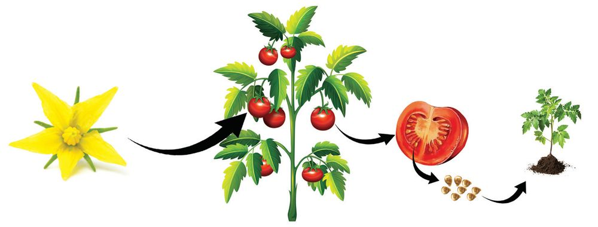


ക്ലാസ്
പൈൻ (Pine) സൈക്കസ് (Cycas) പന്നൽ (Ferns)
ഇവ കൂടാതെ പായലുകൾ പോോലെയുള്ള ചെറുസസ്യയങ്ങളുംം പുഷ്പിക്കാറില്ല. നിങ്ങളുടെ സ്കൂൾ ഉദ്യാാനം സന്ദർശിച്ച് പൂക്കാത്ത സസ്യയങ്ങൾ ഏതെല്ലാമെന്ന് കണ്ടെത്തി എഴുതൂ. അധികവായനയ്ക്ക്
നീലക്കുറിഞ്ഞി (Strobilanthes kunthiana) നീലപ്പൂക്കൾകൊൊണ്ട് പശ്ചിമഘട്ട മലനിരകളെ മനോോ ഹരമാക്കുന്ന ഒരു കുറ്റിച്ചെടിയാണ് നീലക്കുറിഞ്ഞി. സമുദ്രനിരപ്പിൽ നിന്നും 1200 മീറ്റർ ഉയരത്തിലുള്ള പുൽമേടുകളിലും ചോോലവനങ്ങളിലുമാണ് ഇവ വളരുന്നത്. പശ്ചിമഘട്ടത്തിൽ കാണപ്പെടുന്ന വിവി ധയിനം കുറിഞ്ഞികളിൽ ഒന്നുമാത്രമാണ് നീലക്കു റിഞ്ഞി. ഇവ 12 വർഷത്തിലൊൊരിക്കൽ കൂട്ടമായി പൂവിടുന്നു. ഓഗസ്റ്റ് മുതൽ ഒക്ടോോബർ വരെയാണ് ഇവയുടെ പൂക്കാലം.
പൂവിൻ്റെ ധർമ്മങ്ങൾ ചെടികളിൽ പൂക്കൾ ഉണ്ടാകുന്നതുകൊൊണ്ടുള്ള പ്രയോോജനങ്ങൾ എന്തൊൊക്കെയാണ്? താഴെകൊൊടുത്തിരിക്കുന്ന ചിത്രീകരണം വിശകലനം ചെയ്ത് സസ്യയങ്ങൾക്ക് പൂക്കൾ കൊൊ ണ്ടുള്ള പ്രയോോജനങ്ങൾ എന്തെല്ലാമെന്ന് കണ്ടെത്തി ശാസ്ത്രപുസ്തകത്തിൽ എഴുതൂ.
63
VI
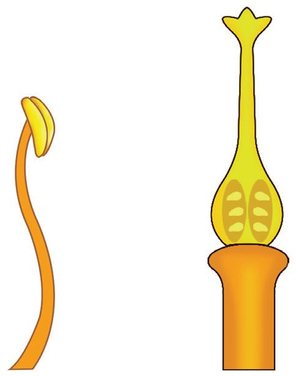

അടിസ്ഥാനശാസ്ത്രം u
പൂവിൽ നിന്ന് ഫലം ഉണ്ടാകുന്നു.
u u
ഫലവും വിത്തും പൂവിൽനിന്ന് ഫലവും ഫലത്തിനുള്ളിലെ വിത്തിൽനിന്ന് പുതിയ ചെടിയും ഉണ്ടാകുന്നു വെന്ന് ചിത്രീകരണത്തിൽനിന്നും നിങ്ങൾ മനസ്സിലാക്കിയല്ലോോ. എങ്ങനെയാണ് പൂവിൽനിന്ന് ഫലവും വിത്തും ഉണ്ടാകുന്നത്? പ്രത്യുൽപാദനം വഴിയാണ് പൂവിൽനിന്ന് ഫലവും വിത്തുമുണ്ടാകുന്നത്. ഏതൊൊക്കെയാ ണ് പൂവിന്റെ പ്രത്യുൽപാദനഭാഗങ്ങൾ? ഇതുവരെ മനസ്സിലാക്കിയ വിവരങ്ങൾ പ്രയോോജ നപ്പെടുത്തി എഴുതൂ. ആൺ പ്രത്യുൽപാദനാവയവം : ................................................. പെൺ പ്രത്യുൽപാദനാവയവം : ................................................. താഴെക്കൊൊടുത്തിട്ടുള്ള ചിത്രങ്ങൾ നിരീക്ഷിച്ച് കേസരത്തിൻ്റെയും ജനിയുടെയും ഭാഗ ങ്ങൾ ഏതൊൊക്കെയാണെന്ന് മനസ്സിലാക്കൂ. പരാഗണസ്ഥലം ജനിദണ്ഡ്
പരാഗി കേസരം
അണ്ഡാശയം ഓവ്യൂൾ
ജനി തന്തുകം
കേസരം
ജനി
ചെമ്പരത്തിപ്പൂവിൻ്റെ കേസരപുടം, ജനിപുടം എന്നിവ ഹാൻഡ് ലെൻസ്/മൈക്രോോസ്കോോ പ്പ് ഉപയോോഗിച്ച് നിരീക്ഷിക്കൂ. കേസരപുടം: കേസരങ്ങൾ ചേർന്നതാണ് കേസരപുടം. കേസരത്തിന് തന്തുകം (Filament), പരാഗി (Anther) എന്നീ ഭാഗങ്ങളുണ്ട്. പരാഗിയിലെ അറകളിലാണ് പരാഗരേ ണുക്കൾ (Pollen grains) ഉള്ളത്. പുംബീജത്തെ (ആൺബീജകോോശം) വഹിക്കുന്ന ഭാഗങ്ങ ളാണ് പരാഗരേണുക്കൾ. ജനിപുടം: പൂവിൻ്റെ പെൺപ്രത്യുൽപാദന ഭാഗമാണ് ജനിപുടം. ജനിയിൽ പരാഗണ സ്ഥലം (Stigma), ജനിദണ്ഡ് (Style), അണ്ഡാശയം (Ovary) എന്നീ ഭാഗങ്ങളുണ്ട്. അണ്ഡാ ശയത്തിനുള്ളിലെ ഓവ്യൂളിനുള്ളിലാണ് അണ്ഡം അഥവാ പെൺബീജകോോശം കാണപ്പെ ടുന്നത്. 64


ക്ലാസ് u u u u
ഏതൊൊക്കെ ഭാഗങ്ങൾ ചേർന്നതാണ് കേസരം? പരാഗരേണുക്കൾ കാണപ്പെടുന്നത് എവിടെയാണ്? ജനിയുടെ ഭാഗങ്ങൾ ഏതെല്ലാമാണ്? പെൺബീജം കാണപ്പെടുന്നത് എവിടെയാണ്?
ജനിപുടം, കേസരപുടം എന്നിവയുടെ ഭാഗങ്ങൾ തിരിച്ചറിഞ്ഞല്ലോോ. ഒരു ചെമ്പരത്തിപ്പൂ വിന്റെ ഛേദം വ്യയക്തമാക്കുന്ന ചിത്രമാണ് ചുവടെ നൽകിയിട്ടുള്ളത്. അതിൽ ഭാഗങ്ങൾ അടയാളപ്പെടുത്തൂ. ..................................... .....................................
..................................... ..................................... ..................................... ..................................... .....................................
ചെമ്പരത്തിപ്പൂവിന്റെ ഛേദം
ചെമ്പരത്തിപ്പൂവിന്റെ ഛേദം ശാസ്ത്രപുസ്തകത്തിൽ വരച്ച് ഭാഗങ്ങൾ അടയാളപ്പെടുത്തൂ.
അണ്ഡാശയങ്ങൾ
ഒരു പൂവിൽ ഒന്നിലധികം അണ്ഡാശയങ്ങൾ ഉണ്ടാകു മോോ? നിങ്ങളുടെ ഊഹം എന്താണ്? ഒരു പൂവിൽ ഒന്നിലധികം അണ്ഡാശയങ്ങൾ കാണുന്ന പൂക്കളാണ് ചെമ്പകപ്പൂവ്, താമരപ്പൂവ്, സീതപ്പഴപ്പൂവ്, അരണമരപ്പൂവ് എന്നിവ.
പൂക്കളിലും ആണും പെണ്ണും പൂക്കളിൽ ആണും പെണ്ണും ഉണ്ടോോ?
ചെമ്പകപ്പൂവ്
നിങ്ങൾ നിരീക്ഷിച്ച എല്ലാ പൂക്കളിലും കേസരപുടവും ജനിപുടവും ഒരേ പൂവിൽ കാണു ന്നുണ്ടോോ എന്ന് കണ്ടെത്താൻ ഒരു പ്രവർത്തനം ഗ്രൂപ്പിൽ ചെയ്താലോോ. ആവശ്യയമായ സാമഗ്രികൾ : വെണ്ട, മത്തൻ എന്നിവയുടെ പൂക്കൾ, ഹാൻഡ് ലെൻസ്. വെണ്ടയുടെ പൂക്കളുംം മത്തൻപൂക്കളുംം നിരീക്ഷിക്കൂ. അവയുടെ കേസരപുടം, ജനിപുടം എന്നീ ഭാഗങ്ങൾ കണ്ടെത്തൂ. രണ്ട് പൂക്കളിലും കേസരപുടവും ജനിപുടവും ഒരേ പൂവിൽ ത്തന്നെയാണോോ കാണുന്നത്? രണ്ടു പൂക്കളുംം ഇക്കാര്യയത്തിൽ എങ്ങനെ വ്യയത്യാസപ്പെട്ടി രിക്കുന്നു? 65
VI
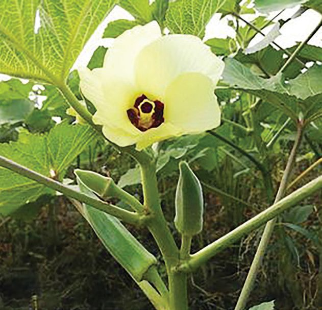

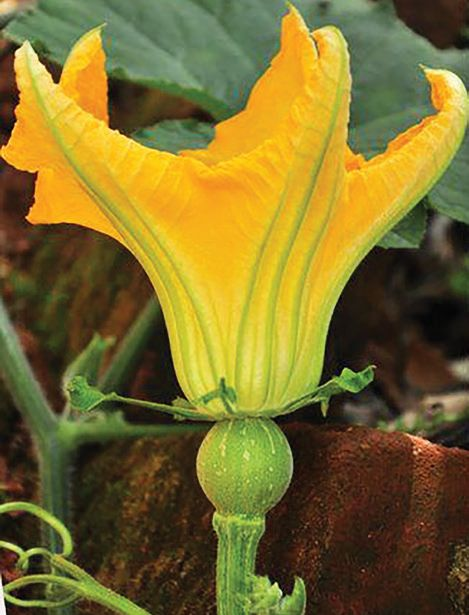
അടിസ്ഥാനശാസ്ത്രം
വെണ്ടയുടെ പൂവ്
മത്തൻപൂക്കൾ
നിങ്ങളുടെ കണ്ടെത്തലുകൾ പട്ടികപ്പെടുത്തൂ. പൂവ്
നിരീക്ഷണങ്ങൾ
വെണ്ട
കേസരപുടവും ജനിപുടവും ഒരേ പൂവിൽ കാണുന്നു,
മത്തൻ കേസരപുടവും ജനിപുടവും ഒരേ പൂവിൽ കാണപ്പെടുന്ന സസ്യയങ്ങൾ ഉണ്ട്. കേസരപു ടവും ജനിപുടവും പ്രത്യേേകം പൂക്കളിൽ കാണപ്പെടുന്ന സസ്യയങ്ങളുംം ഉണ്ടെന്ന് പട്ടിക വിശകലനം ചെയ്തതിലൂടെ മനസ്സിലായില്ലേ. കേസരപുടം മാത്രം കാണപ്പെടുന്ന പൂക്കളാണ് ആൺപൂക്കൾ. എന്താണ് പെൺപൂവ്? ചർച്ചചെയ്യൂ. ആൺപൂവിനെയും പെൺപൂവിനെയും ഏകലിംഗപുഷ്പങ്ങൾ എന്നു വിളിക്കാമോോ? മത്തന്റെ പൂക്കൾ ഏകലിംഗപുഷ്പങ്ങളാണോോ? ചർച്ചചെയ്ത് ശാസ്ത്രപുസ്തകത്തിൽ എഴുതൂ. വെണ്ടയുടെ പൂവിൽ കേസരപുടവും ജനിപുടവും ഒരേ പൂവിലാണ് കാണപ്പെടുന്നതെന്ന് നിങ്ങൾ കണ്ടെത്തിയല്ലോോ. വെണ്ടയുടെ പൂവ് ഏകലിംഗപുഷ്പമാണോോ ദ്വിലിംഗപുഷ്പമാണോോ? എന്തുകൊൊണ്ട്? ചർച്ച ചെയ്ത് നിഗമനങ്ങൾ ശാസ്ത്രപുസ്തകത്തിൽ രേഖപ്പെടുത്തൂ.
ഏകലിംഗപുഷ്പങ്ങളുംം ദ്വിലിംഗപുഷ്പങ്ങളുംം കേസരപുടം, ജനിപുടം ഇവയിൽ ഏതെങ്കിലും ഒന്നുമാത്രം കാണപ്പെടുന്ന പൂക്കളാണ് ഏകലിംഗപുഷ്പങ്ങൾ (Unisexual flowers). ഒരു പൂവിൽ തന്നെ കേസരപുടവും ജനിപുടവും കാണപ്പെടുന്നതാണ് ദ്വിലിംഗപു ഷ്പങ്ങൾ (Bisexual flowers). 66
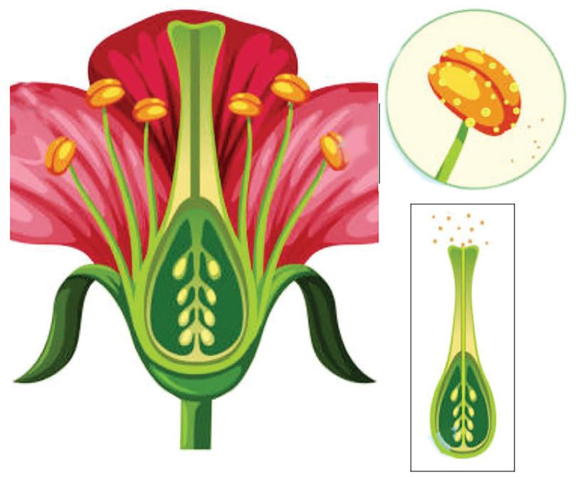
ക്ലാസ്
VI
നിങ്ങളുടെ ചുറ്റുപാടുമുള്ള പൂക്കൾ നിരീക്ഷിച്ച് ഏകലിംഗപുഷ്പങ്ങളെയും ദ്വിലിംഗപുഷ്പ ങ്ങളെയും കണ്ടെത്തി ശാസ്ത്രപുസ്തകത്തിൽ എഴുതൂ. ക്ലാസിൽ അവതരിപ്പിക്കൂ. ഏകലിംഗപുഷ്പങ്ങൾ
ദ്വിലിംഗപുഷ്പങ്ങൾ
പാവൽ
ചെമ്പരത്തി
നിങ്ങൾ നിരീക്ഷിച്ച പൂക്കളിൽ ഏകലിംഗപുഷ്പങ്ങളാണോോ ദ്വിലിംഗപുഷ്പങ്ങളാണോോ കൂടുതൽ? ചർച്ചചെയ്യൂ.
ചെടികളിലും ആണും പെണ്ണും ആൺപൂക്കൾ മാത്രംകാണുന്ന സസ്യയങ്ങളുംം പെൺപൂക്കൾ മാത്രം കാണുന്ന സസ്യയങ്ങളുംം ഉണ്ടാകുമോോ? ചർച്ചചെയ്യൂ. ആൺപൂക്കൾ മാത്രം കാണുന്ന സസ്യയങ്ങളുംം പെൺപൂക്കൾ മാത്രം കാണുന്ന സസ്യയങ്ങളുംം നമ്മുടെ ചുറ്റുപാടുമുണ്ട്. ആൺപൂക്കൾ മാത്രം കാണുന്ന സസ്യയങ്ങളെ ആൺസസ്യയങ്ങളെ ന്നും പെൺപൂക്കൾ മാത്രം കാണുന്ന സസ്യയങ്ങളെ പെൺസസ്യയങ്ങൾ എന്നും പറയുന്നു.
ഏകലിംഗസസ്യയങ്ങളുംം ദ്വിലിംഗസസ്യയങ്ങളുംം (Dioecious Plants & Monoecious Plants) ആൺപൂക്കളുംം പെൺപൂക്കളുംം വെവ്വേറെ സസ്യയങ്ങളിലാണ് കാണുന്നതെങ്കിൽ അത്തരം സസ്യയങ്ങളെ ഏകലിംഗസസ്യയങ്ങൾ (Dioecious plant) എന്ന് പറയു ന്നു. ഏകലിംഗസസ്യയങ്ങൾക്ക് ഉദാഹരണങ്ങളാണ് ഈന്തപ്പന, കുടംപുളി, ജാതി, പപ്പായ എന്നിവ. ഒരു സസ്യയത്തിൽത്തന്നെ ആൺപൂക്കളുംം പെൺപൂക്കളുംം കാണ പ്പെടുന്ന സസ്യയങ്ങളാണ് ദ്വിലിംഗസസ്യയങ്ങൾ (Monoecious plant). വെള്ളരി, മത്തൻ, കുമ്പളം, പടവലം, തെങ്ങ് തുടങ്ങിയവ ദ്വിലിംഗസസ്യയങ്ങളാണ്. ഏകലിംഗസസ്യയങ്ങൾക്കും ദ്വിലിംഗസസ്യയങ്ങൾക്കും കൂടുതൽ ഉദാഹരണങ്ങൾ കണ്ടെ ത്തി എഴുതൂ. പരാഗണസ്ഥലം പൂക്കളിലെ പ്രത്യുൽപാദന അവയവങ്ങളെക്കുറിച്ചും അവയുടെ ധർമ്മങ്ങളെക്കുറിച്ചും ചർച്ചചെയ്തല്ലോോ. പൂവിൽനിന്ന് വിത്തുണ്ടാകണമെങ്കിൽ പുംബീജവും അണ്ഡവും യോോജിക്കേണ്ടേ? എങ്ങനെയാണ് ഇത് സാധ്യയമാകുന്നത്? പുംബീജം പരാഗരേണുക്കളിലും അണ്ഡം അണ്ഡാ ശയത്തിലുമാണ് കാണപ്പെടുന്നത് എന്ന് മനസ്സിലാ ക്കിയല്ലോോ. പുംബീജവും അണ്ഡവും തമ്മിൽ യോോ ജിക്കണമെങ്കിൽ പരാഗരേണുക്കൾ ജനിപുടത്തിലെ പരാഗണസ്ഥലത്ത് പതിക്കേണ്ടതില്ലേ? എങ്ങനെ യാണ് ഇത് സംഭവിക്കുന്നത്? 67
പരാഗരേണു
പരാഗി

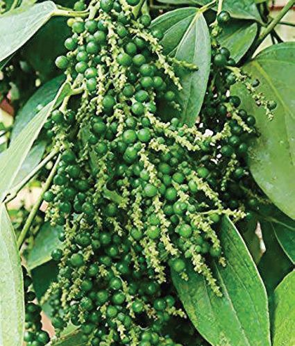
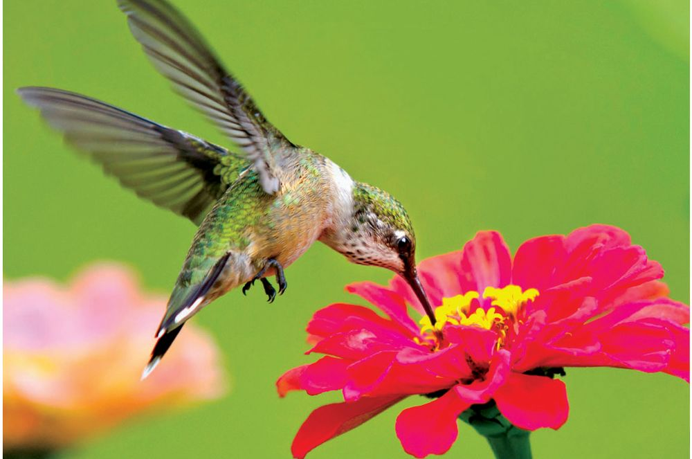
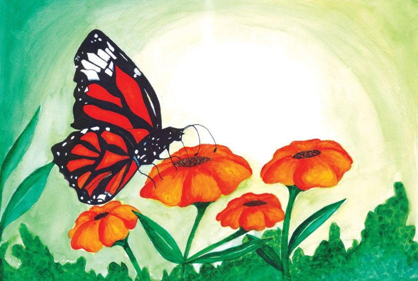
അടിസ്ഥാനശാസ്ത്രം
പരാഗണം (Pollination) പരാഗിയിൽനിന്ന് പരാഗരേണുക്കൾ പരാഗണസ്ഥലത്ത് പതിക്കുന്നതാണ് പരാഗണം.
പൂക്കളുടെ കൂട്ടുകാർ നൽകിയിരിക്കുന്ന ചിത്രങ്ങൾ നിരീക്ഷിക്കൂ.
പ്രാണികളുംം പക്ഷികളുംം പൂക്കളിലേക്ക് ആകർഷിക്കപ്പെടാനുള്ള കാരണങ്ങൾ എന്തെല്ലാ മാകാം? നിങ്ങളുടെ ഊഹം കുറിക്കൂ. ഇവ പൂക്കളിൽനിന്ന് തേൻ കുടിക്കുന്നതുകൊൊണ്ട് പൂക്കൾക്ക് എന്താണ് പ്രയോോജനം? പൂക്കളിൽ പരാഗണം നടത്താൻ ഇവ സഹായിക്കുന്നുണ്ടോോ? ചർച്ചചെയ്യൂ. ഏതെല്ലാം ഘടകങ്ങളാണ് പരാഗണത്തെ സഹായിക്കുന്നത്? പ്രാണികളുംം പക്ഷികളുംം പരാഗണത്തെ സഹായിക്കുന്നുണ്ട് എന്ന് നിങ്ങൾക്കറിയാം. ഇവ പരാഗണകാരികളാണ്. പ്രാണികളുംം പക്ഷികളുംം മാത്രമാണോോ പരാഗണത്തെ സഹായിക്കുന്നത്? ജീവികളെ കൂടാതെ പരാഗണത്തിന് സഹായിക്കുന്ന ഏതെല്ലാം പരാഗണകാരികളുണ്ട്? താഴെക്കൊൊടുത്തിരിക്കുന്ന ചിത്രങ്ങൾ നിരീക്ഷിച്ച് പരാഗണകാരികളെ കണ്ടെത്തി എഴുതൂ. ഞങ്ങളിൽ കാറ്റുവഴിയാണ് പരാഗണം നടക്കുന്നത്. ഭാരം കുറഞ്ഞ ധാരാളം പരാഗരേണുക്കൾ ഉള്ളതുകൊൊണ്ടാണ് ഇത് സാധിക്കുന്നത്.
ഞങ്ങളിൽ പരാഗണം നടക്കാൻ ജലം ആവശ്യയമാണ്.
കുരുമുളക് ............................................. നെല്ല് ............................................. 68


ക്ലാസ്
ഈ രീതിയിൽ പരാഗണം നടത്തുന്ന സസ്യയങ്ങളിൽ പരാഗണകാരികളെ ആകർഷിക്കുന്നതിന് നിറം, തേൻ, മണം തുടങ്ങിയ ഘടകങ്ങൾ ആവശ്യയമു ണ്ടോോ? നിങ്ങളുടെ നിഗമനം ശാസ്ത്രപുസ്തകത്തിൽ രേ ഖപ്പെടുത്തു. ഏതെല്ലാം പരാഗണകാരികളെയാണ് ഇതുവരെ പരിചയപ്പെട്ടത്? u
നിങ്ങൾ
പ്രാണികൾ
u u u
പരാഗണകാരികൾക്ക് ഒരു നിർവചനം രൂപീകരിക്കൂ.
സ്വവപരാഗണവും പരപരാഗണവും ചിത്രങ്ങൾ നിരീക്ഷിച്ച് ഏതെല്ലാം രീതിയിലാണ് പരാഗണം നടക്കാൻ സാധ്യയതയുള്ളതെന്ന് മനസ്സി ലാക്കൂ.
അധികവായനയ്ക്ക്
വാനില നമ്മുടെ നാട്ടിൽ കൃഷിചെ യ്യുന്ന ഒരു സുഗന്ധവ്യയ ഞ്ജനമാണ് വാനില. ഈ സസ്യയത്തിന്റെ ജന്മദേശം തെക്കേ അമേരിക്കയാണ്. വാ നിലയിൽ പരാഗണം നടത്തു ന്നത് ഒരിനം തേനീച്ചയാണ്. എന്നാൽ നമ്മുടെ നാട്ടിൽ ഈ തേനീച്ച ഇല്ലാത്തതിനാൽ കർ ഷകർതന്നെ പൂക്കളിൽ കൃത്രിമ മായി പരാഗണം നടത്തിയാണ് വിത്ത് ഉൽപാദിപ്പിക്കുന്നത്.
ചിത്രം 1 ചിത്രം 2 ചിത്രം 3 ഒന്നാമത്തെ ചിത്രത്തിൽ ഒരു പൂവിന്റെ പരാഗരേണുക്കൾ അതേ പൂവിന്റെ പരാഗണസ്ഥ ലത്ത് തന്നെയല്ലേ പതിക്കുന്നത്? രണ്ടാമത്തെ ചിത്രത്തിൽ എന്താണ് സംഭവിക്കുന്നത്? മൂന്നാമത്തെ ചിത്രത്തിലോോ? ചർച്ചചെയ്ത് എഴുതൂ. ചിത്രം 1 : പരാഗരേണുക്കൾ അതേ പൂവിൽ പതിക്കുന്നു. ചിത്രം 2 : .............................................................................................. ചിത്രം 3 : .............................................................................................. 69
VI
അടിസ്ഥാനശാസ്ത്രം
സ്വവപരാഗണവും (Self Pollination) പരപരാഗണവും (Cross Pollination) ഒരു പൂവിലെ പരാഗരേണുക്കൾ അതേ പൂവിൻ്റെ പരാഗണസ്ഥലത്തോോ അതേ ചെടിയിലെ മറ്റൊൊരു പൂവിൻ്റെ പരാഗണസ്ഥലത്തോോ പതിക്കുന്നതാണ് സ്വവപരാഗണം. ഒരു പൂവിൽനിന്ന് പരാഗരേണുക്കൾ അതേ വർഗത്തിൽപ്പെട്ട മറ്റൊൊരു ചെടിയിലെ പൂവിന്റെ പരാഗണസ്ഥലത്ത് പതിക്കുന്നതാണ് പരപരാഗണം. നിങ്ങൾ നിരീക്ഷിച്ച ചിത്രങ്ങളിൽ ഏതൊൊക്കെ പൂക്കളിലാണ് സ്വവപരാഗണം നടക്കുന്നത്? ഏതിലാണ് പരപരാഗണം നടക്കുന്നത്? കണ്ടെത്തിയെഴുതു. പരാഗണവുമായി ബന്ധപ്പെട്ട് താഴെപ്പറയുന്ന പ്രസ്താവനകൾ വിശകലനം ചെയ്യൂ. ശരിയാ യവയ്ക്ക്നേരെ () ചെയ്യൂ ഏകലിംഗസസ്യയങ്ങളിൽ പരപരാഗണം മാത്രം നടക്കുന്നു.
¨
ദ്വിലിംഗസസ്യയങ്ങളിൽ പരപരാഗണം മാത്രമാണ് നടക്കുന്നത്.
¨
ദ്വിലിംഗപുഷ്പങ്ങളിൽ സ്വവപരാഗണവും പരപരാഗണവും നടക്കുന്നു.
¨
അധികവായനയ്ക്ക്
പരപരാഗണത്തെ പ്രോോത്സാഹിപ്പിക്കുന്ന പ്രകൃതി സസ്യയങ്ങളിൽ മെച്ചപ്പെട്ടതും വൈവിധ്യയമാർന്നതുമായ ഇനങ്ങൾ ഉണ്ടാകു ന്നതിന് പ്രകൃതിതന്നെ സ്വവപരാഗണത്തെ തടഞ്ഞ് പരപരാഗണത്തെ പ്രോോ ത്സാഹിപ്പിക്കുന്നുണ്ട്. ചില സസ്യയങ്ങളിലെ പൂക്കളിൽ ആൺ-പെൺ ലിം ഗാവയവങ്ങൾ വ്യയത്യയസ്തസമയത്താണ് പാകമാകുന്നത്. ഉദാഹരണത്തിന് സൂര്യയകാന്തിയിൽ കേസരം പൂർണ്ണവളർച്ച എത്തിയതിനുശേഷമാണ് ജനിപു ടത്തിന്റെ വളർച്ച പൂർണ്ണമാകുന്നത്. അവക്കാഡോോയിൽ ജനിപുടത്തിന്റെയും കേസരത്തിന്റെയും വളർച്ച പൂർത്തിയാകുന്നത് വ്യയത്യയസ്ത സമയങ്ങളിലാണ്. മേന്തോോന്നിയിൽ സ്വവപരാഗണം തടയുന്നതിനായി കേസരവും ജനിപുടവും രണ്ടു ദിശയിൽ കാണപ്പെടുന്നു.
പരാഗണത്തിനുശേഷം പരാഗണത്തിനുശേഷം പരാഗരേണുവിന് എന്താണ് സംഭവിക്കുന്നത്? നൽകിയിരിക്കുന്ന കുറിപ്പ് വിശകലനം ചെയ്ത് പരാഗണത്തിനുശേഷം നടക്കുന്ന പ്രക്രിയകൾ എഴുതൂ. ചർ ച്ചാസൂചകങ്ങളുംം പ്രയോോജനപ്പെടുത്തുമല്ലോോ.
70
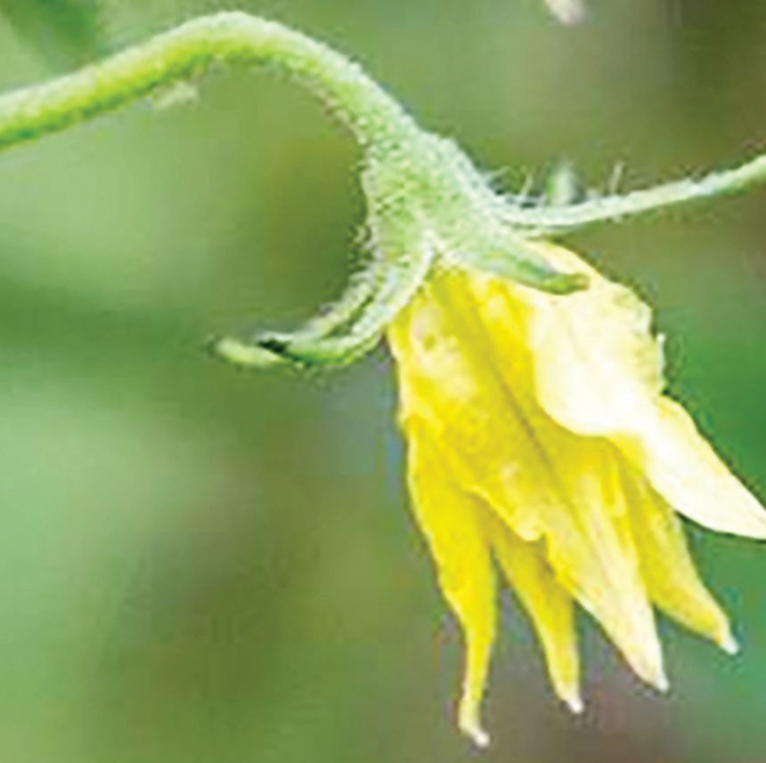

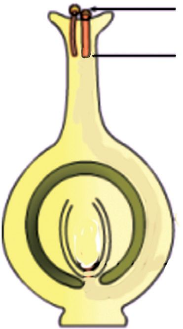
ക്ലാസ് പരാഗരേണു
ബീജസങ്കലനം (Fertilization)
നാളി
പരാഗണത്തിനുശേഷം പരാഗരേണു, ജനിദണ്ഡി ലൂടെ അണ്ഡാശയത്തിലേക്ക് ഒരു നാളി (Tube) യായി വളരുന്നു. ഈ നാളിയിലൂടെ പുംബീജം (Male gamete) അണ്ഡാശയത്തിലെത്തി അണ്ഡ വുമായി (Egg) കൂടിച്ചേരുന്നു. പുംബീജം അണ്ഡ വുമായി ചേർന്ന് സിക്താണ്ഡമാകുന്ന (Zygote) പ്രക്രിയയാണ് ബീജസങ്കലനം.
അണ്ഡാ ശയം
ചർച്ചാസൂചകങ്ങൾ u u
പരാഗണത്തിനുശേഷം പരാഗരേണുവിന് എന്ത് സംഭവിക്കുന്നു? പരാഗരേണുവിലെ പുംബീജം അണ്ഡാശയത്തില് എത്തുന്നത് എങ്ങനെയാണ്?
u
എന്താണ് ബീജസങ്കലനം?
u
ബീജസങ്കലനം നടന്ന അണ്ഡം ഏതു പേരിലാണ് അറിയപ്പെടുന്നത്?
ബീജസങ്കലനത്തിനുശേഷം
ബീജസങ്കലനത്തിനുശേഷം തക്കാളിയുടെ പൂവിനുണ്ടാകുന്ന മാറ്റങ്ങളാണ് ചിത്രത്തിൽ കാണുന്നത്. ചിത്രം വിശകലനം ചെയ്ത് താഴെപ്പറയുന്ന ഭാഗങ്ങൾക്കുണ്ടാകുന്ന മാറ്റങ്ങൾ ചർച്ചചെയ്ത് എഴുതൂ. 71
VI

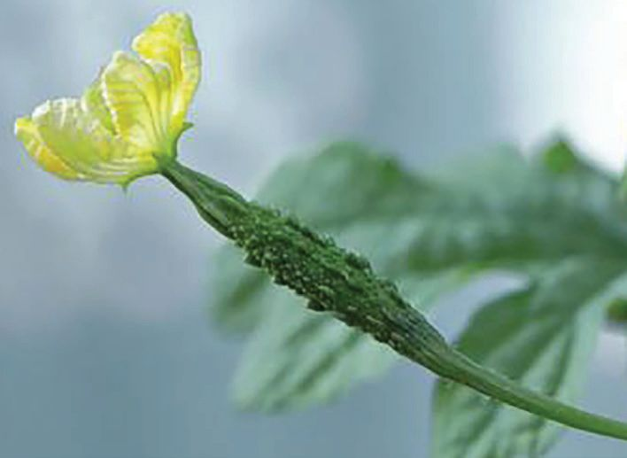
അടിസ്ഥാനശാസ്ത്രം u
ദളങ്ങൾ - കൊൊഴിഞ്ഞുപോോകുന്നു
u
കേസരപുടം - ...........................................
u
അണ്ഡാശയം - ...........................................
u
പൂഞെട്ട്
u
വിദളങ്ങൾ
- ...........................................
- ...........................................
നിങ്ങൾ നിരീക്ഷിച്ചിട്ടുള്ള എല്ലാ പൂക്കളിലും ഇത്തരം മാറ്റങ്ങളാണോോ സംഭവിക്കുന്നത്? ബീജസങ്കലനത്തിനുശേഷം സിക്താണ്ഡം ഭ്രൂണമായും ഓവ്യൂൾ വിത്തായും അണ്ഡാശയം ഫലമായും മാറുന്നു.
ഫലങ്ങൾ ബീജസങ്കലനത്തിനുശേഷം അണ്ഡാശയം വളർന്നാ ണല്ലോോ ഫലം ഉണ്ടാകുന്നത്. അണ്ഡാശയത്തിന്റെ എണ്ണവും ഫലത്തിന്റെ എണ്ണവും തമ്മിൽ ബന്ധമു ണ്ടോോ? ചിത്രം നിരീക്ഷിക്കൂ. പാവലിന്റെ പൂവിന് ഒരു അണ്ഡാശയം മാത്രമേയു ള്ളൂ. അപ്പോോൾ അതിൽ നിന്ന് എത്ര ഫലങ്ങളാകും ഉണ്ടാകുന്നത്? ചിത്രം നോോക്കി മനസ്സിലാക്കൂ.
പാവലിൻ്റെ പൂവ്
പാവലിന്റെ പൂവിനെപ്പോോലെ മാങ്ങ, വെണ്ട, പയർ, പപ്പായ. എന്നിവയുടെ പൂക്കളിലും ഒരു അണ്ഡാശയം മാത്രമാണുള്ളത്.
ഒരു പൂവിൽ നിന്ന് ഒരു ഫലം ഉണ്ടാകുന്നതാണ് ലഘുഫലം (Simple fruit). ലഘുഫല ങ്ങൾക്ക് കൂടുതൽ ഉദാഹരണങ്ങൾ കണ്ടെത്താമല്ലോോ. ഒരു പൂവിൽ ഒന്നിലധികം അണ്ഡാ ശയങ്ങൾ ഉണ്ടെങ്കിൽ അതിൽനിന്നും ഒന്നിലധികം ഫലങ്ങൾ ഉണ്ടാകുമോോ? സീതപ്പഴത്തിന്റെ പൂവിൽ ഒന്നിലധികം അണ്ഡാശയങ്ങൾ ഉണ്ട്.
സീതപ്പഴപ്പൂവ്
സീതപ്പഴം
ഒരു പൂവിൽ ഒന്നിലധികം അണ്ഡാശയങ്ങൾ ഉണ്ടെങ്കിൽ ഒന്നിലധികം ഫലങ്ങളുംം ഉണ്ടാകും എന്ന് മനസ്സിലായില്ലേ. ഒന്നിലധികം അണ്ഡാശയങ്ങളുള്ള ഒരു പൂവിൽ നിന്ന് ഉണ്ടാകുന്ന ഫലങ്ങളാണ് പുഞ്ജഫലങ്ങൾ (Aggregate Fruits). സീതപ്പഴം പുഞ്ജഫല മാണ്. പുഞ്ജഫലങ്ങൾക്ക് കൂടുതൽ ഉദാഹരണങ്ങൾ കണ്ടെത്തി ശാസ്ത്രപുസ്തകത്തിൽ എഴുതൂ. 72


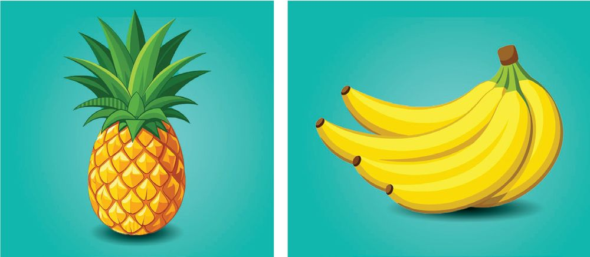
ക്ലാസ്
അധികവായനയ്ക്ക്
വിത്തില്ലാ ഫലങ്ങൾ
ബീജസങ്കലനം നടക്കാ തെ ചില സന്ദർഭങ്ങളിൽ അണ്ഡാശയം ഫലമായി മാറാറുണ്ട്. ഇത്തരം ഫലങ്ങളിൽ വിത്തുണ്ടാ വുകയില്ല. പാർത്തനോോ കാർപ്പി (Parthenocarpy) എന്നാണ് ഈ പ്രതിഭാ സം അറിയപ്പെടുന്നത്. കൈതച്ചക്ക വാഴപ്പഴം വിത്തില്ലാ ഫലങ്ങൾ പ്ര കൃതിദത്തമായി ഉണ്ടാകാറുണ്ട്. കൃത്രിമമായും അവയെ ഉണ്ടാക്കാറുണ്ട്. വാഴപ്പഴം, കൈതച്ചക്ക എന്നിവ ഇത്തരം പ്രകൃതിദത്ത ഫലങ്ങളാണ്. മുന്തിരി, തക്കാളി, തണ്ണി മത്തൻ എന്നിവയുടെ വിത്തില്ലാത്ത ഇനങ്ങൾ കൃത്രിമമായി നാം വികസിപ്പിച്ചിട്ടുണ്ട്.
പൂങ്കുലകൾ പൂങ്കുലകളിൽ ഫലം ഉണ്ടാകുന്നത് നിങ്ങൾ നിരീക്ഷിച്ചിട്ടുണ്ടോോ?
മാവിന്റെ പൂങ്കുല
വാഴയുടെ പൂങ്കുല
73
VI

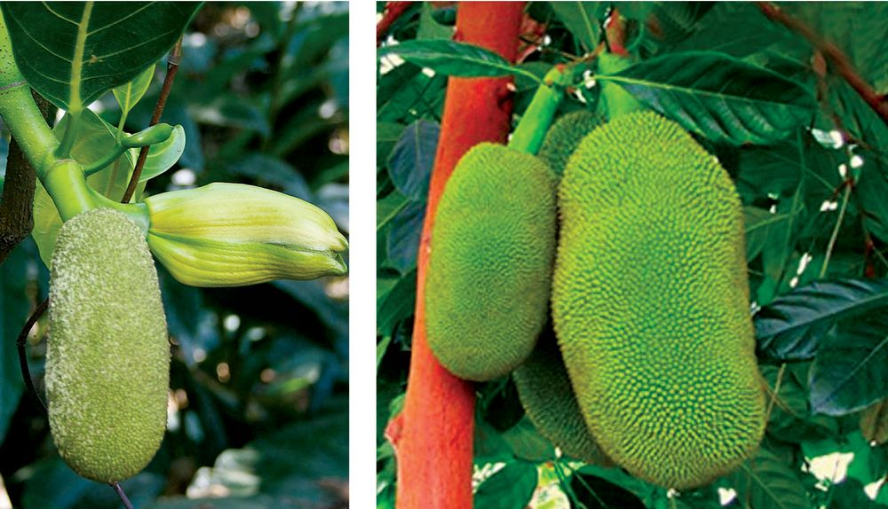
അടിസ്ഥാനശാസ്ത്രം
പ്ലാവിന്റെ പൂങ്കുല
മാവിൻ്റെ പൂങ്കുലയിലെ ഓരോോ പൂവും ഓരോോ മാങ്ങയായി മാറുന്നത് ശ്രദ്ധിച്ചിട്ടുണ്ടോോ? വാഴയുടെ പൂങ്കുലയിലും ഓരോോ പൂവും ഫലമായി മാറുന്നു. എന്നാൽ ഇതുപോോലെയാ ണോോ പ്ലാവിന്റെ പൂങ്കുലയിൽ സംഭവിക്കുന്നത്? നിങ്ങളുടെ കണ്ടെത്തൽ ചർച്ച ചെയ്യൂ. മാവ്, വാഴ എന്നിവയുടെ പൂങ്കുലകളിൽ ഉണ്ടാകുന്ന ഫലങ്ങൾ വേറിട്ടാണ് കാണപ്പെടു ന്നത്. എന്നാൽ പ്ലാവിൻ്റെ പൂങ്കുലയിൽ ഉണ്ടാകുന്ന ഫലങ്ങൾ എല്ലാം കൂടിച്ചേർന്ന് ഒറ്റ ഫലമായി മാറുന്നു. ഒരു പൂങ്കുലയിൽ ഉണ്ടാകുന്ന ഒന്നിലധികം ഫലങ്ങൾ കൂടിച്ചേർന്ന് ഒറ്റ ഫലം ആകുന്നതാണ് സംയുക്തഫലം (Multiple Fruit). കൈതച്ചക്ക, ആഞ്ഞിലിച്ചക്ക, ശീമച്ചക്ക എന്നിവ സംയുക്തഫലങ്ങളാണ്.
കപടഫലങ്ങൾ (Pseudo Fruits) നാം കാണുന്ന എല്ലാ ഫലങ്ങളുംം അണ്ഡാശയം വളർന്നാണോോ ഉണ്ടാകുന്നത്? കശുമാങ്ങയുടെ കാര്യയമെടുത്താലോോ? ചിത്രങ്ങൾ നിരീക്ഷിക്കൂ.
ഏതുഭാഗമാണ് കശുമാങ്ങയിൽ ഫലം പോോലെയായത്? മറ്റ് ഫലങ്ങളിൽനിന്ന് കശുമാങ്ങയ്ക്ക് എന്ത് വ്യയത്യാസമാണുള്ളത്? ചർച്ചചെയ്യൂ. 74
ക്ലാസ്
സാധാരണ പൂക്കളിൽ അണ്ഡാശയം വളർന്നാണ് ഫലം ഉണ്ടാകുന്നത്. ചില സസ്യയങ്ങ ളിൽ അണ്ഡാശയം അല്ലാതെ പൂവിലെ മറ്റു ഭാഗങ്ങളുംം ഫലമായി മാറുന്നു. ഇവയാണ് കപടഫലങ്ങൾ. കശുമാങ്ങയിൽ പൂഞെട്ട് വളർന്നാണ് ഫലമാകുന്നത്. കപടഫലങ്ങൾക്ക് കൂടുതൽ ഉദാഹരണങ്ങൾ കണ്ടെത്തൂ. ആപ്പിളുംം, സബർജെല്ലിയും നിങ്ങൾ കഴിച്ചിട്ടുണ്ടല്ലോോ. ഇവയും കപടഫലങ്ങളാണ്. ഇവയുടെ പുഷ്പാസനം വളർന്ന് ഫലമായി മാറുന്നു. എന്തുകൊൊണ്ടായിരിക്കും അവയെ കപടഫലങ്ങൾ എന്ന് വിളിക്കുന്നത് എന്ന് മനസ്സിലായില്ലേ. താഴെതന്നിരിക്കുന്ന ഫലങ്ങൾ തരംതിരിച്ച് പട്ടികപ്പെടുത്തി ക്ലാസിൽ അവതരിപ്പിക്കൂ. മാങ്ങ, കൈതച്ചക്ക, പപ്പായ, സീതപ്പഴം, കശുമാങ്ങ, സ്ട്രോോബെറി, പേരയ്ക്ക, ചാമ്പക്ക, അരണമരക്കായ, ആപ്പിൾ, ശീമച്ചക്ക. ലഘുഫലം
പുഞ്ജഫലം
സംയുക്തഫലം
കപടഫലം
മാങ്ങ
ഓരോോന്നിനും കൂടുതൽ ഉദാഹരണങ്ങൾ കണ്ടെത്തി പട്ടിക വിപുലീകരിക്കൂ.
പുഷ്പകൃഷി (Floriculture) പൂക്കൾകൊൊണ്ട് നമുക്ക് എന്തെല്ലാം പ്രയോോജനങ്ങളുണ്ട്? കണ്ണിന് കുളിർമ തരുന്നത് മാ ത്രമാണോോ അതിന്റെ പ്രയോോജനം? താഴെക്കൊൊടുത്തിരിക്കുന്ന പദസൂര്യയൻ പൂർത്തിയാക്കൂ. പൂക്കളുടെ ഉപയോോഗങ്ങൾ ചർച്ചചെയ്ത് കുറിപ്പ് തയ്യാറാക്കി ക്ലാസിൽ അവതരിപ്പിക്കൂ.
മരുന്ന്
...................................
...................................
പൂക്കൾ
....................................
ഭക്ഷണം
...................................
75
VI


അടിസ്ഥാനശാസ്ത്രം
നിങ്ങളുടെ സ്കൂളിലെ ജൈവവൈവിധ്യയ ഉദ്യാാനത്തിൽ വ്യയത്യയസ്ത ഉപയോോഗമുള്ള പൂച്ചെടി കൾ ഉണ്ടോോ എന്ന് പരിശോോധിക്കൂ. ഇല്ലെങ്കിൽ അവ ഉൾപ്പെടുത്തി ഉദ്യാാനം സമ്പുഷ്ടമാ ക്കാൻ ശ്രദ്ധിക്കുമല്ലോോ. പൂക്കൾ വ്യാവസായികമായി വളർത്തുന്നത് ആദായകരമല്ലേ.
നിങ്ങൾ പൂക്കൾ കൃഷിചെയ്യുന്ന തോോട്ടങ്ങൾ സന്ദർശിച്ചിട്ടുണ്ടോോ? പല നിറത്തിലുള്ള പൂക്കൾ വിരിഞ്ഞു നിൽക്കുന്ന തോോട്ടങ്ങൾ കാണാൻ എന്തു ഭംഗിയാണ്.
ഫ്ളോോറികൾച്ചർ പൂച്ചെടികൾ, അലങ്കാരസസ്യയങ്ങൾ എന്നിവ വാണിജ്യാാടിസ്ഥാനത്തിൽ ഉൽപാദിപ്പിച്ച് വളർത്തി പരിപാലിക്കുന്നതാണ് പുഷ്പകൃഷി അഥവാ ഫ്ലോോറികൾച്ചർ. പുഷ്പങ്ങൾ കൃഷിചെയ്യുന്നതുകൊൊണ്ടുള്ള നേട്ടങ്ങൾ എന്തെല്ലാമാണ്? ചർച്ചചെയ്യൂ. വാണിജ്യാാവശ്യയങ്ങൾക്കായി വളർത്തുന്ന പൂച്ചെടികൾ ഏതെല്ലാമാണ്? u
റോോസ്
u u
അധികവായനയ്ക്ക്
ആന്തൂറിയം
പുഷ്പകൃഷിയിൽ പ്രാധാന്യയമുള്ള ഒരു സസ്യയമാണ് ആന്തൂറിയം. ഇതിന്റെ ഏറ്റവും ആകർഷക മായ ഭാഗം രൂപാന്തരം പ്രാപിച്ച ഇലകളാണ്. പൂവിനോോട് ചേർന്ന് കാണുന്ന ഇത്തരം നിറമു ള്ള ഭാഗങ്ങളെ സഹപത്രം (Bracts) എന്നാണ് പറയുന്നത്. പരാഗണകാരികളെ ആകർഷി ക്കുക എന്നതാണ് സഹപത്രങ്ങളുടെ ധർമ്മം. വാഴ, ബോോഗെൻവില്ല എന്നീ സസ്യയങ്ങളി ലും ആകർഷകമായ സഹപത്രം കാണാൻ കഴിയും. 76
ക്ലാസ്
പൂക്കൾ നമുക്ക് കണ്ണിന് കുളിർമ നൽകുന്ന മനോോഹരകാഴ്ചകൾ മാത്രമല്ലെന്നും അതിന് മറ്റ് പല പ്രയോോജനങ്ങൾ ഉണ്ടെന്നും മനസ്സിലായില്ലേ. വിത്തുകൾ ഉൽപാദിപ്പിച്ച് സസ്യയങ്ങളുടെ വംശം നിലനിർത്തുകയാണ് പൂക്കളുടെ പ്രധാന ധർമ്മം എന്ന് നിങ്ങൾ പഠിച്ചുവല്ലോോ. സസ്യയങ്ങളെയും പൂക്കളെയും നമുക്ക് സംരക്ഷി ക്കാം.
വിലയിരുത്താം 1. മാവ്, വാഴ, പ്ലാവ് എന്നീ സസ്യയങ്ങളുടെ പൂവ്, ഫലം എന്നിവ താരതമ്യംം ചെയ്ത് വ്യയത്യാ
സങ്ങൾ എഴുതുക.
2. താഴെപ്പറയുന്നവയിൽ തെങ്ങുമായി യോോജിക്കാത്ത പ്രസ്താവന ഏത്? a)
ഒരു ദിലിംഗ സസ്യയമാണ്.
b) തെങ്ങിൽ ആൺപൂക്കളുംം പെൺപൂക്കളുംം പ്രത്യേേകം പ്രത്യേേകമായി
കാണപ്പെടുന്നു.
c) പെൺപൂക്കളിൽനിന്നാണ് തേങ്ങ ഉണ്ടാകുന്നത്. d) കേസരപുടം, ജനിപുടം എന്നിവ ഒരേ പൂവിൽ 3.
കാണപ്പെടുന്നു.
ശരിയായവ തമ്മിൽ വരച്ച് യോോജിപ്പിക്കുക. പുഞ്ജഫലം
ഒരു പൂവിൽനിന്ന് ഒരു ഫലം ഉണ്ടാകുന്നു.
സംയുക്തഫലം
ഒരു പൂവിൽനിന്ന് ഒന്നിലധികം ഫലങ്ങൾ ഉണ്ടാകുന്നു.
ലഘുഫലം
ഒരു പൂങ്കുലയിൽനിന്ന് ധാരാളം ഫലങ്ങൾ ഉണ്ടാകുന്നു. അവയെല്ലാം ചേർന്ന് ഒരു ഫലം പോോലെയാകുന്നു.
തുടർപ്രവർത്തനം 1.
നിങ്ങളുടെ ചുറ്റുപാടിൽനിന്നും വിവിധതരം പൂക്കൾ ശേഖരിച്ച് ക്ലാസിൽ ഒരു പൂക്കളം ഒരുക്കുകയോോ പുഷ്പപ്രദർശനം സംഘടിപ്പിക്കുകയോോ ചെയ്യൂ.
2.
ഇലകൾ ഉണക്കി ഹെർബേറിയം തയ്യാറാക്കുന്നതുപോോലെ പൂക്കളുംം ഉണക്കി സൂക്ഷിക്കാം. ഇതിനായി അനുയോോജ്യയമായ പൂക്കൾ തിരഞ്ഞെടുക്കുക, അവ പേ പ്പറിലോോ ബുക്കിനുള്ളിലോോ വച്ച് പ്രസ് ചെയ്യുക, രണ്ടാഴ്ചയോോളം ബുക്കിനുള്ളിൽ സൂക്ഷിച്ചുവയ്ക്കുക. അത് ക്ലാസിൽ പ്രദർശിപ്പിക്കൂ. 77
VI